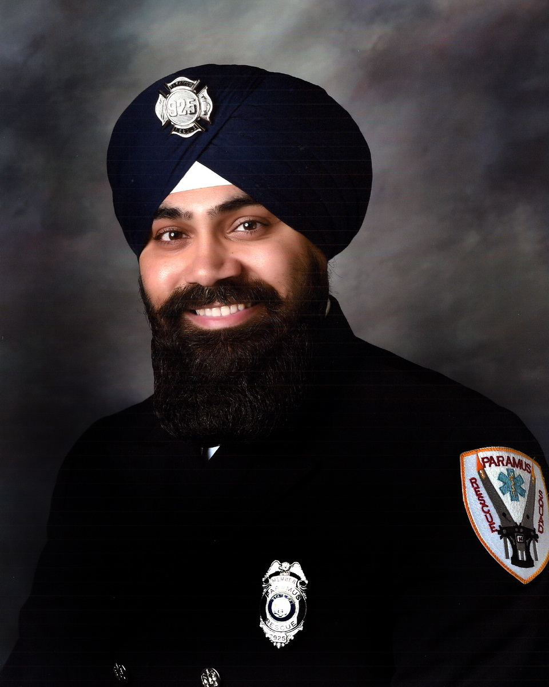

Gursimran Singh

Summary:
Using passion and drive, my goal is to build a positive work
environment by incorporating fundamental values such as innovation,
passion, and success by being a playing-coach. Talent may win games,
but teamwork wins championships. By coaching and developing my team,
I aim to drive their professional growth and serve as a conduit and
escalation point, resolving sophisticated issues quickly and efficiently.
With over 7 years of leadership and technical experience, I aim to inspire
and lead support engineers to their next step, all the while meeting business
expectations.
Skills
- HTML, CSS, PHP, SQL, Python
- Microsoft Office & Adobe Products
- Root Cause Analysis & Remediation
- Innovation & Collaboration
- Coaching & Mentorship
- Client Relationship Management
Education
- New Jersey Institute of Technology
- MBA in Management of Technology
- New Jersey Institute of Technology
- Bachelors of Science in Information Technology
Work Experience
-
Operations Supervisor,Weill Cornell Medicine
-
Assess & Deliver team KPI/Metrics targets
-
Revolutionized pre-existing processes for project intake and procedures,
resulting in improved efficiency and reduced turnaround time.
-
Developed and implemented standardized incident management procedures,
ensuring prompt resolution and minimizing business disruptions.
-
Expedited remote/on-site stakeholder issues ranging from access to
software/hardware related inquiries, all the while stressing customer
experience.
-
Conducted regular team meetings to provide updates, assign tasks, and
address challenges, fostering a collaborative work environment.
-
Facilitated the onboarding process for new hires, providing comprehensive
training on company policies, procedures, and ensuring smooth integration
into the team.
-
Incident Manager, Bloomberg
-
Prioritized each incident based upon its impact on business and escalated
issues considered major threats.
-
Simultaneously managed and monitored multiple chats/emails for various
incidents to resolution.
-
Documented information before, during and after incidents in order to model
trends, generate reports and post mortem takeaways.
-
Collaborated with involved team members to complete post-incident assessments.
-
Information Systems, Bloomberg
-
Mac and Windows environment service/maintenance/troubleshooting
-
JAMF/SCCM Software Deployment
-
Owned New-Hire process across the Americas
-
Successfully managed and facilitated two ticket queues
-
Successfully piloted ESR integration while continuing to provide
platinum-level support
-
Delivered local and remote Tier 1 IT hardware and software support for VIP
executives
-
Active Directory management, GPO creations, Share access remediation, software
deployments assistance
-
Authored and distributed training notes in a knowledge base for various issues across
Employee Support teams
-
Participated in the remediation of technical-debt throughout various projects within the
Information Systems department
-
Troubleshot daily IT desktop client issues, supporting over 19,000 employees globally across
multiple departments
-
Documented solutions and troubleshooting steps concisely in the SDSK Ticketing System and alerted
other team members of new service solutions.
-
Managed user profiles, security access and shared file structures.
Certifications
-
Security Fundamentals, Microsoft - 2021
-
365 Certified: Fundamentals, Microsoft - 2021
-
Mobility and Device Fundamentals, Microsoft - 2020
-
Windows Operating System Fundamentals, Microsoft - 2020
Volunteer Experience
-
Special Police Officer, Paramus Police Department (2022-Present)
-
Patrolman, Paramus Police Department (2021-Present)
-
Rescuer, Paramus Rescue Squad (2021-Present)
Other